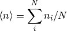
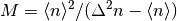
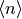
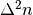

photonpacket.stat1d module¶
-
class
photonpacket.stat1d.stat1d¶ Methods
coherent(n, navg)mean(fs)Calculate the mean photon number nmodethermal(n, navg, M)plotstat(h, **kwargs)qmandel(fs)Q_M stat(fs)std(fs)subbinomal(fs)Calculate the sub-binomial paramter thmodes(fs)Calculate the number of modes estimated assuming the photons are distributed thermally var(fs)-
static
coherent(n, navg)¶
-
static
mean(fs)¶ Calculate the mean photon number
Parameters: fs : frameseries
Series of photon frames
Returns: double
Mean photon number
Notes
The mean photon number is calculated as

where
 is the total number of photons in frame
is the total number of photons in frame  and
and  is the total number of frames in the series.
is the total number of frames in the series.Examples
>>> fs.mean() 0.553
-
static
nmodethermal(n, navg, M)¶
-
static
plotstat(h, **kwargs)¶
-
static
qmandel(fs)¶ Q_M Mandel Q parameter TODO: implement
-
static
stat(fs)¶
-
static
std(fs)¶
-
static
subbinomal(fs)¶ Calculate the sub-binomial paramter
Parameters: Series of photon frames
Returns: double
The sub-binomial parameter
Notes
The sub-binomial parameter was introduced in [R1]
References
[R1] (1, 2) - Sperling, W. Vogel, and G. S. Agarwal, “Sub-binomial light”, Phys. Rev. Lett. 109, 093601 (2012).
Examples
>>> fs.subbinomial() 1
-
static
thmodes(fs)¶ Calculate the number of modes estimated assuming the photons are distributed thermally
Parameters: Series of photon frames
Returns: double
Estimated number of thermal modes
See also
qmandel- Related Mandel Q Parameter
Notes
Number of thermal modes may be estimated as:

where  is the mean photon number and  is photon number variance.
Examples
>>> fs.thmodes() 1
-
static
var(fs)¶
-
static